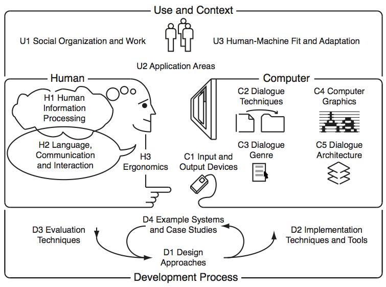

Este sitio tiene como proposito diseñar sitios web utilizando lenguaje HTML de acuerdo con los requerimientos del usuario
Fundamentos de HTML
HTML son los datos sin procesar a partir de los cuales se construye una página web. Todo el texto, enlaces, tarjetas, listas y botones se crean en HTML.
Muchos recursos excelentes siguen refiriéndose a HTML como lenguaje de programación, pero si desea ser técnico, etiquetarlo como tal no es del todo exacto, porque solo se ocupa de presentar información.
Ubah, K. Learn Web Development Basics – HTML, CSS, and JavaScript Explained for Beginners. Recuperado el 7 de Septiembre de 2022, de Free Code Camp

Etiquetas básicas de HTML
La interacción humano-computadora (HCI) es un campo de estudio multidisciplinario que se centra en el diseño de tecnología informática y, en particular, en la interacción entre humanos (los usuarios) y computadoras.
HCI pronto se convirtió en objeto de una intensa investigación académica. Aquellos que estudiaron y trabajaron en HCI lo vieron como un instrumento crucial para popularizar la idea de que la interacción entre una computadora y el usuario debería parecerse a un diálogo abierto de persona a persona.
Correa Alfaro, L. (2010). Comunicabilidad, paradigma de la interacción humano-computador. No solo usabilidad, (9). Recuperado el 7 de Septiembre de 2022, de No solo usabilidad
